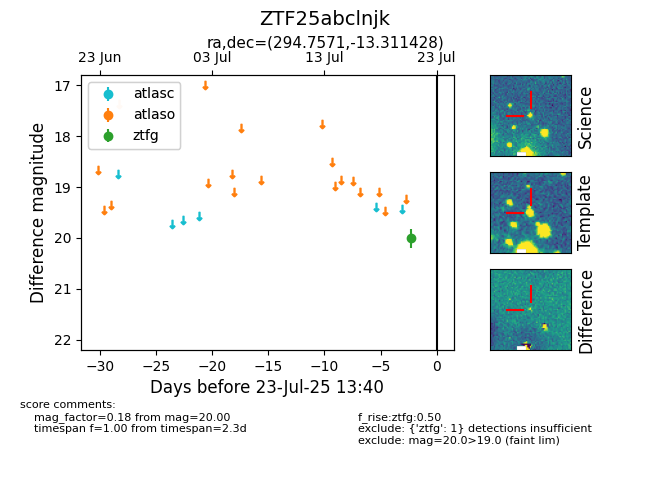

Target ZTF25abclnjk at 2025-07-23 13:40, see:
FINK: fink-portal.org/ZTF25abclnjk
Lasair: lasair-ztf.lsst.ac.uk/objects/ZTF25abclnjk
ALeRCE: alerce.online/object/ZTF25abclnjk
alt names
ZTF25abclnjk (ztf,fink)
coordinates:
equatorial (ra, dec) = (294.7571,-13.31143)
galactic (l, b) = (26.1387,-16.47166)
photometry
last ztfg=20.00
1 ztfg detections
